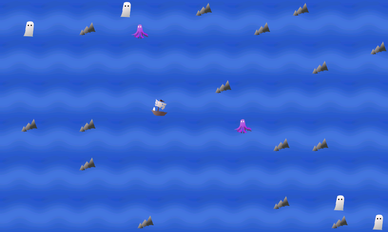
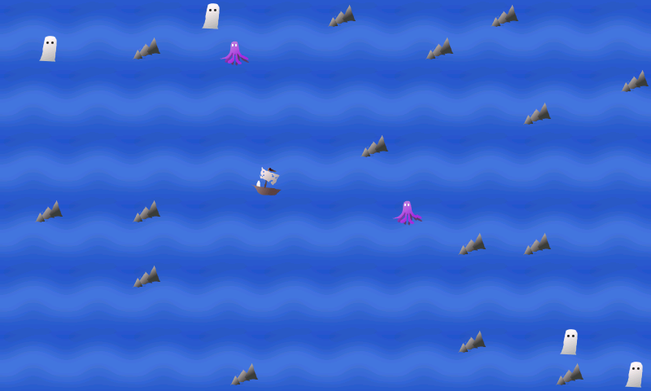

Ghosts Overboard
Ghosts Overboard

The ship has picked up a ghost
The ship has picked up a ghost
The menu is accessed by tapping the screen.
The game on N950

This is how menu looks on Harmattan
| Ghosts Overboard
|
| Home | Screenshots | Changelog | Support | Download | Sources |
|

The ship has picked up a ghost |
The menu is accessed by tapping the screen. |
The game on N950 |
This is how menu looks on Harmattan |
| ©
Heli Hyvättinen 2011. Ghosts Overboard is free software under GNU
General Public License 2. |